Перш, ніж гість побачить вашу кухню, вітальню, фойє або домашній кінотеатр, перше, що вони помічають, це паркан у вашому
дворі. Є багато доступних конструкцій огорожі. Хоча установка може бути трохи складною. Не планування вперед
може призвести до затримок і ускладнень. Перше, що потрібно вирішити - це, які стилі паркану будуть краще всього
підходять на вашому подвір'ї. Витратьте час, щоб дізнатися про парканах. Розуміти їх функціональність, використовуваний
матеріал, мета і висоту. Гарне розуміння цих атрибутів необхідно перед викликом підрядника по огорожі. Без належного
дослідження, ви не можете отримати паркан, який відповідає вашим вимогам.
Перше що потрібно знати, це де розташувати Ваш новий паркан? Чи ви огорожуєте свій двір, щоб позначити межу Вашої власності чи просто, щоб додати йому естетичної цінності? Чи мова йде про фасад чи про задній двір. Огорожа перед двором повинна мати гарний вигляд з вулиці і бути прикрасою його околиць. Це може бути паркан для огорожувати домашніх тварин або дітей і захищати від вуличного руху. Розуміння основної цілі вашої огорожі допоможе визначити який тип паркана Вам найбільше підходить. 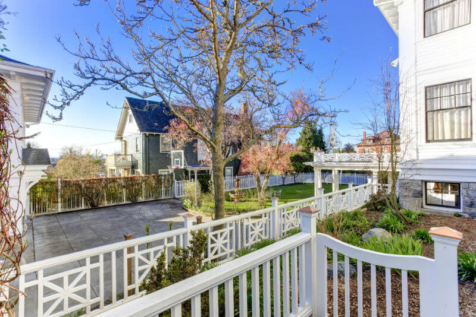 Коли справа доходить до огородження ззаду будинку - існує багато причин для його встановлення. Встановлення огорожі покращує естетичну привабливість території. Хоча вона може служити й іншим цілям. Огорожі заднього двору, наприклад, можуть допомогти зберегти Ваш ландшафт закритим і під контролем. Це також відділяє Ваш задній двір від сусідів, зберігаючи речі аккуратно відокремленими. Він також виконує ті самі функції що і на переді, як безпека і захист дітей і домашнії тварин. Огорожі створюють гарні межі, які не тільки утримають речі всередині, а й ззовні. Це може бути засіб для відлякування грабіжників, яким незначним він би не був, а також допомагає утримати більшість диких тварин від вашої домівки. В деяких парканів є колючий дріт, щоб не дати людям і тваринам зайти на Вашу територію. Деякі паркани оснащені електрикою підключеною до них, щоб вдарити зарядом будь-кого хто торкнеться його. Ці типи огорож дійсно хороші для безпеки. Багато домовласників полюбляють з друзями поїсти на столику для пікніка або на ганку. Паркан забезпечить Вам спокій, щоб чужі люди не заходили до Вас під час відпочинку. Він надасть Вам необхідну конфіденційність, а також відчуття безпеки. 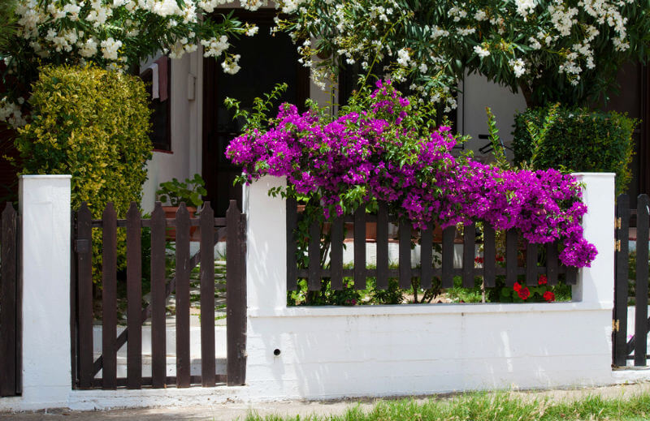 Коли Ви оприділились з метою та причиною, для чого Вам потрібний паркан, Ваше наступнє рішення буде визначитись з його висотою. Для паркана, який просто добавляє естетичної привабливості Вашому будинку, Вам ймовірно потрібний тільки паркан висотою в декілька футів. Однак, якщо ви хочете усамітнитись, тоді Ви можете встановити паркан висотою 5 - 7 футів. Перш ніж ви вирішуєте вибір висоти вашого паркану, майте на увазі, що у деяких містах висота кришки огорожі становить близько 6 футів, але у вашого міста можуть бути різні вимоги. Фактично, місто може вимагати, щоб огородження в районі мали певний колір і матеріал. Тому розберіться з цим до того як Ваш підрядник буде закуповувати матеріали для огорожі. Паркан, призначення якого в основному косметичне, не повинен бути зроблений з чого-небудь, що є особливо міцним. Однак, якщо конфіденційність і безпека є головними цілями, то ви хочете щось міцне, яке буде на довгі роки. Нижче наведені деякі з найбільш поширених матеріалів, що використовуються та їх переваги:
Ви можете морити або фарбувати дерево в відповідності с навколишнім стилем. Деревяний паркан може існувати від 15 до 20 років. Деревяні огорожі можуть служити як паркан для приватного життя, так і декоративним цілям. Існує багато видів деревини, з яких можна виготовляти огорожі з ялини, сосни, червоного дерева і кедру. Деякі з них навіть зроблені з композитної деревини (з перероблених матеріалів) і повинні бути проморені до кінця, щоб протистояти стихіям. Дерев'яні паркани вимагають регулярного обслуговування та іноді підфарбовування, щоб збільшити їх довговічність. Коли справа доходить до безпеки, дерев'яний паркан не найкращий вибір, тому що його можна легко зламати, щоб увійти у ваш двір. 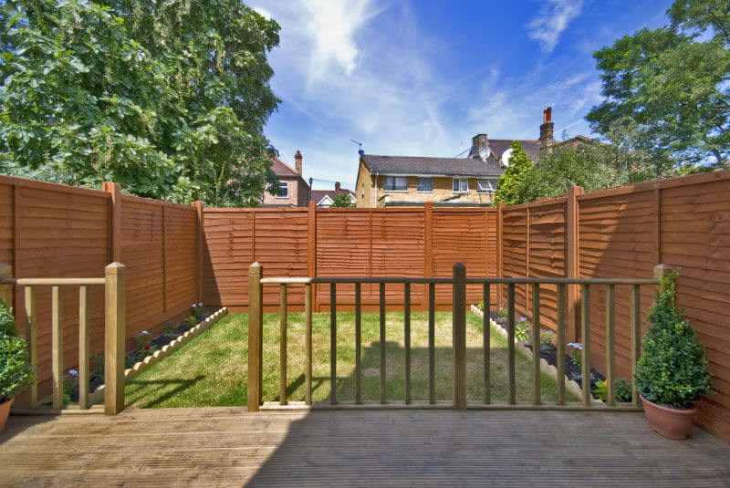 Цей невеликий задній двір закритий горизонтальним дерев'яним парканом. З патіо, є достатньо місця для приємного барбекю. 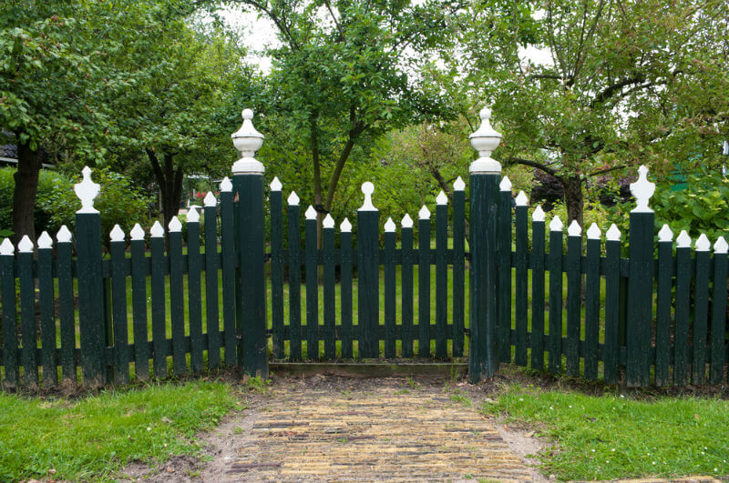 Ось хороший низький паркан, який пофарбований в чорне з білими кінчиками зверху. 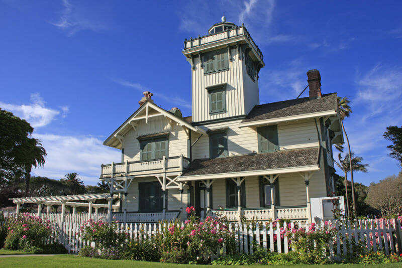 Це приклад будинку на морі з білим парканом. Видний цегляний будинок знаходиться на огороженій території. Цегляна колона металевого паркану виглядає так само,
як і будинок. Трава добре зберігається, як і дерева, і кущі.
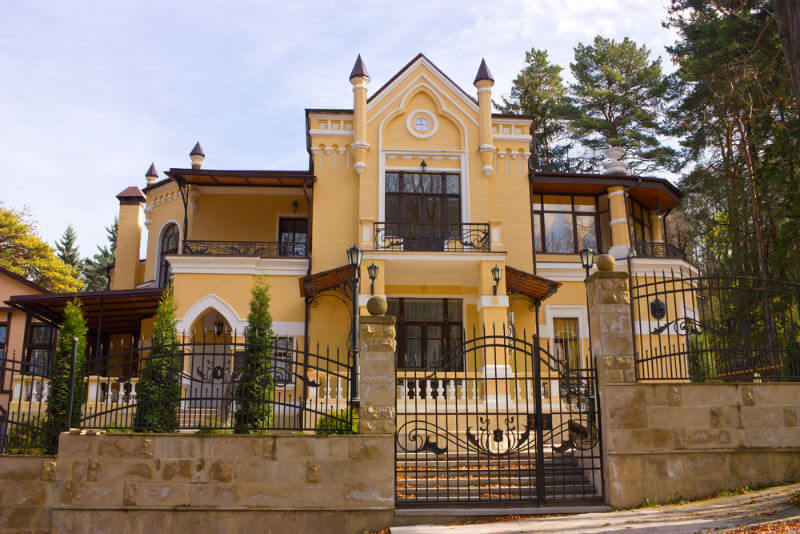 Старий величний двоповерховий будинок спроектований в іспанському стилі. Тема жовтого і білого кольору добре
підходить для цього місця. Дизайн воріт огорожі майстерно зроблений з квітковим візерунком. Огорожа являє собою
комбінацію каменю і металу.
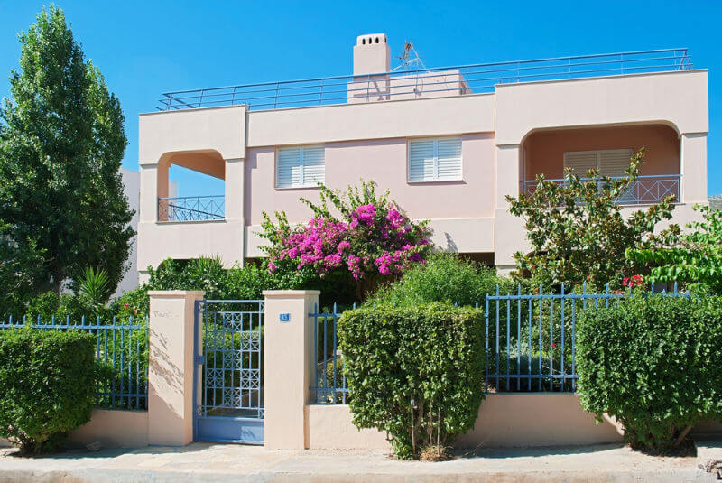 Це рожевий двоповерховий сучасний будинок. Зовнішня сторона захищена металевим парканом з синього металу. Дерева
і кущі за огорожею використовуються для усамітнення від сторонніх очей.
Видний цегляний будинок знаходиться на огороженій території. Цегляна колона металевого паркану виглядає так само,
як і будинок. Трава добре зберігається, як і дерева, і кущі.
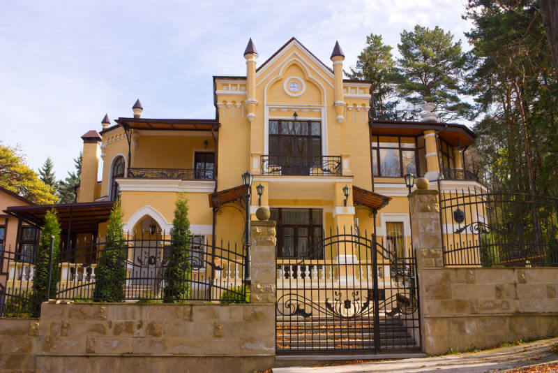 Старий величний двоповерховий будинок спроектований в іспанському стилі. Тема жовтого і білого кольору добре
підходить для цього місця. Дизайн воріт огорожі майстерно зроблений з квітковим візерунком. Огорожа являє собою
комбінацію каменю і металу.
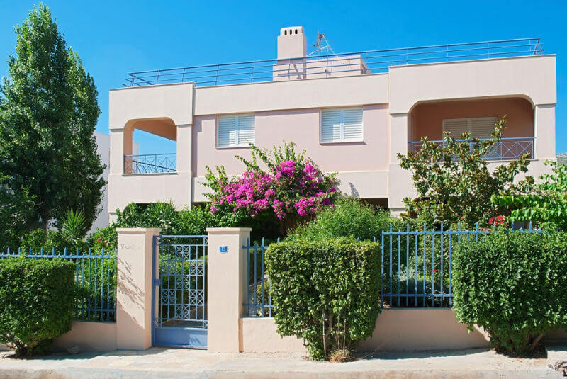 Це рожевий двоповерховий сучасний будинок. Зовнішня сторона захищена металевим парканом з синього металу. Дерева
і кущі за огорожею використовуються для усамітнення від сторонніх очей.
 На цьому господарстві передній паркан має темно-синій зелений колір і зроблений з міцного металу. Це декоративний
короткий паркан, але високі кущі служать природний приватний паркан.
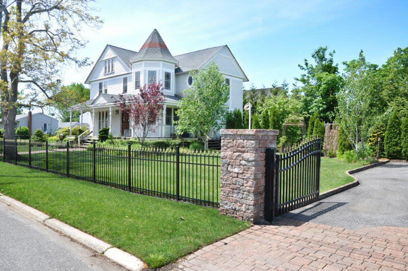 Паркан з кованого заліза, зображений вище, покриває весь двір. Верхня частина паркану має золоті шипи для елегантного
зовнішнього вигляду, а також для захисту від злому. Ворота утримуються разом великий цегляної колоною
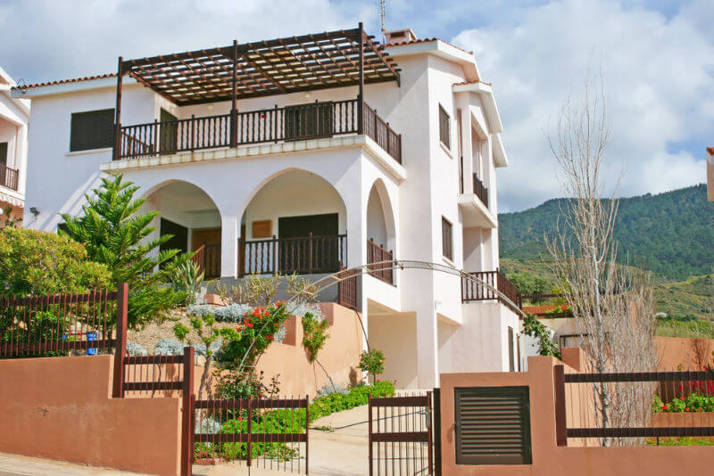 Цей триповерховий будинок - справжня перлина. Майно має два великих балкони, з яких відкривається вид на гори.
Коричневий заміський паркан містить будинок і невеликий сад.
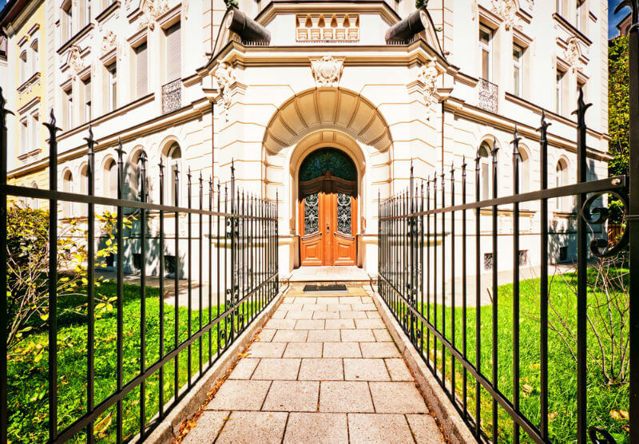 Декоративний металевий паркан чорного кольору обрамляє кожну бік вузької цементною доріжкою. Він веде до входу
у цей величний європейського стилю триповерхову будівлю.
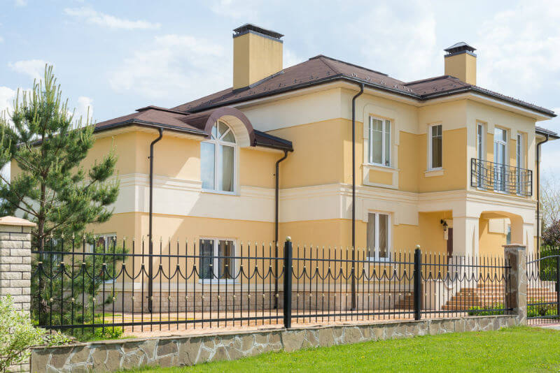 Гарний металевий паркан будинку межує з цим чудовим двоповерховим кремово-жовим житлом. Передні ворота ведуть
до декількох сходинок і головного входу.
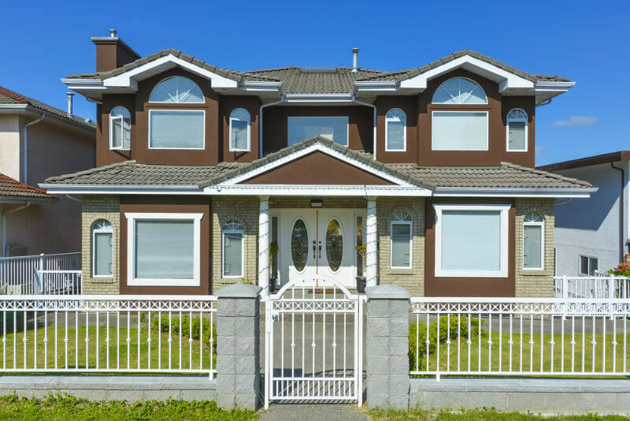 Ландшафтний паркан дає відвідувачам візуальне захоплення перед тим, як наблизитися до входу в будинок. Паркан
короткий. Це в основному для того, щоб добре виглядати, що він і робить з характерними візерунками. Сам будинок
великий з коричнево-білою кольоровою гамою.
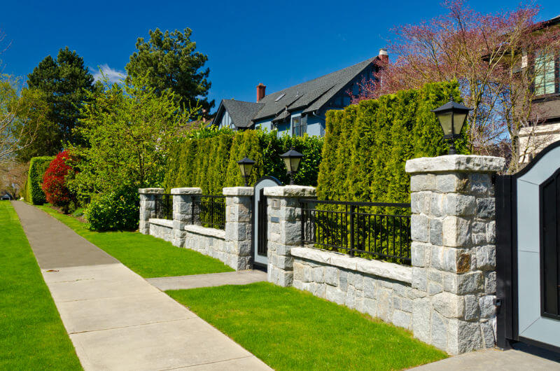 Ось прекрасний будинок у передмісті. Паркан і ворота являють собою простий металевий дизайн. Колони і фундамент
- це нестандартний камінь. Високі дерева висаджуються за парканом, щоб збільшити приватність.
На цьому господарстві передній паркан має темно-синій зелений колір і зроблений з міцного металу. Це декоративний
короткий паркан, але високі кущі служать природний приватний паркан.
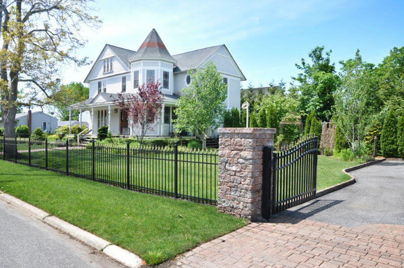 Паркан з кованого заліза, зображений вище, покриває весь двір. Верхня частина паркану має золоті шипи для елегантного
зовнішнього вигляду, а також для захисту від злому. Ворота утримуються разом великий цегляної колоною
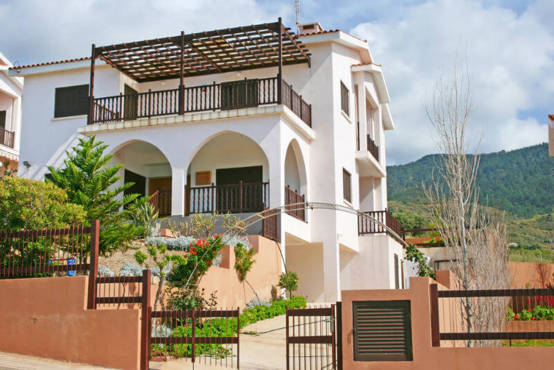 Цей триповерховий будинок - справжня перлина. Майно має два великих балкони, з яких відкривається вид на гори.
Коричневий заміський паркан містить будинок і невеликий сад.
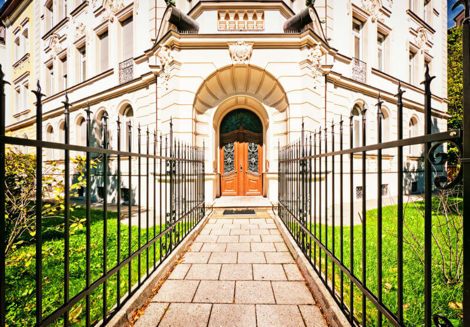 Декоративний металевий паркан чорного кольору обрамляє кожну бік вузької цементною доріжкою. Він веде до входу
у цей величний європейського стилю триповерхову будівлю.
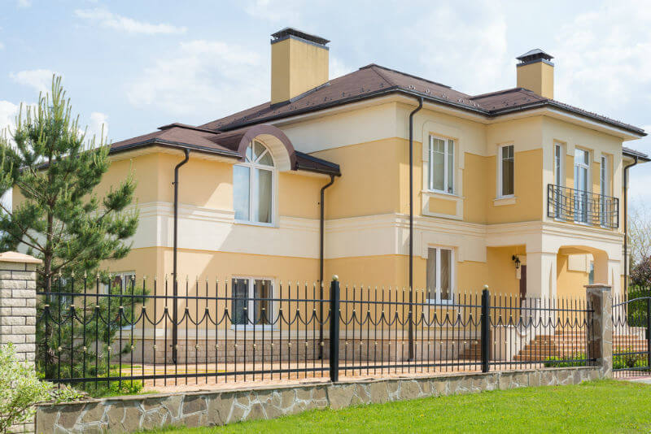 Гарний металевий паркан будинку межує з цим чудовим двоповерховим кремово-жовим житлом. Передні ворота ведуть
до декількох сходинок і головного входу.
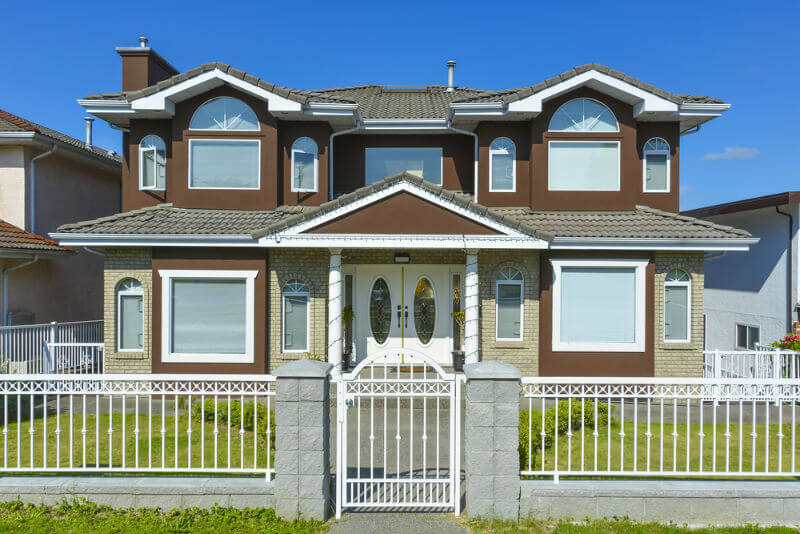 Ландшафтний паркан дає відвідувачам візуальне захоплення перед тим, як наблизитися до входу в будинок. Паркан
короткий. Це в основному для того, щоб добре виглядати, що він і робить з характерними візерунками. Сам будинок
великий з коричнево-білою кольоровою гамою.
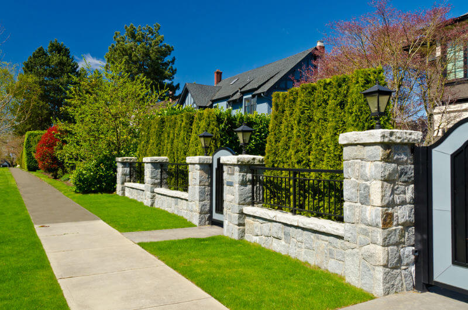 Ось прекрасний будинок у передмісті. Паркан і ворота являють собою простий металевий дизайн. Колони і фундамент
- це нестандартний камінь. Високі дерева висаджуються за парканом, щоб збільшити приватність.
Дивіться тут ще більше прикладів бамбукових парканів
Останнє міркування при виборі паркану - правильний вибір. Знову ж таки, необхідно встановити пріоритети. Що найважливіше? Це безпека, конфіденційність або зовнішній вигляд?
Ось два приклади, які забезпечують конфіденційність та безпеку. 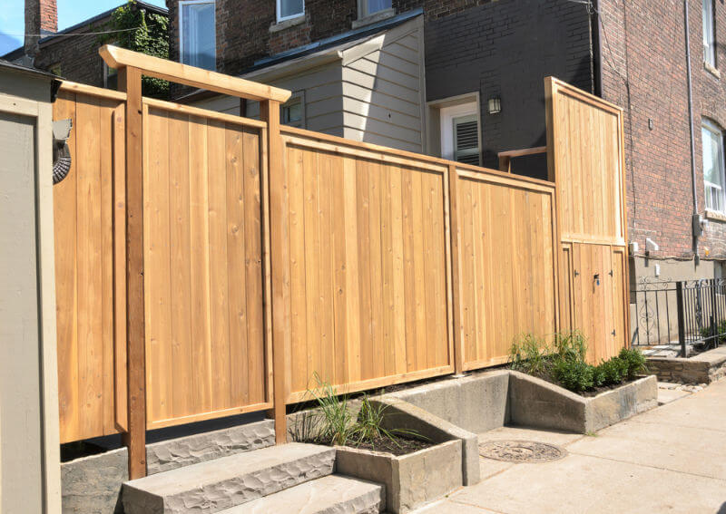 З цим парканом нетреба турбуватись про людей, які заглядають у вашу чудову изольовану кухню. Високий дерев'яний паркан, без проміжків між ними, не дозволяє людям зовні заглядати всередину. 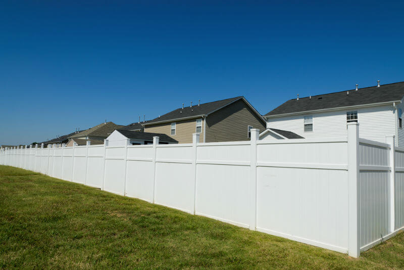 Сильний і високий паркан забезпечує безпеку і конфіденційність, необхідні жителям. Більше приватних парканів тут Садова решітка - паркан, допомагає тримати і влаштувати квіти і кущі.
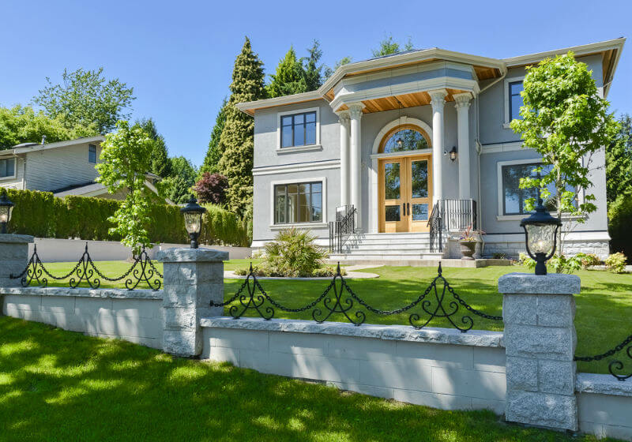 Цей сліпуче високо профільний сірий будинок з великими вікнами. Творчий паркан спереді надає двору елегантний
стиль.
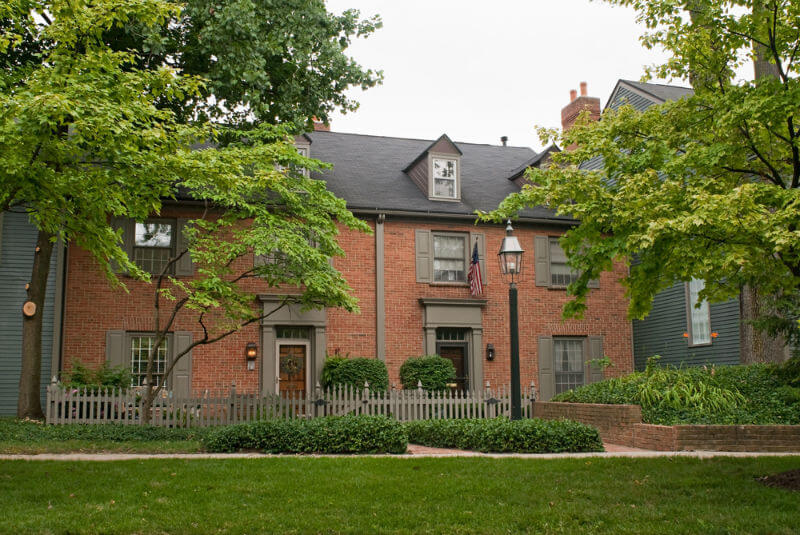 Вище вказаний цегляний будинок прикрашений коричневим штахетником.
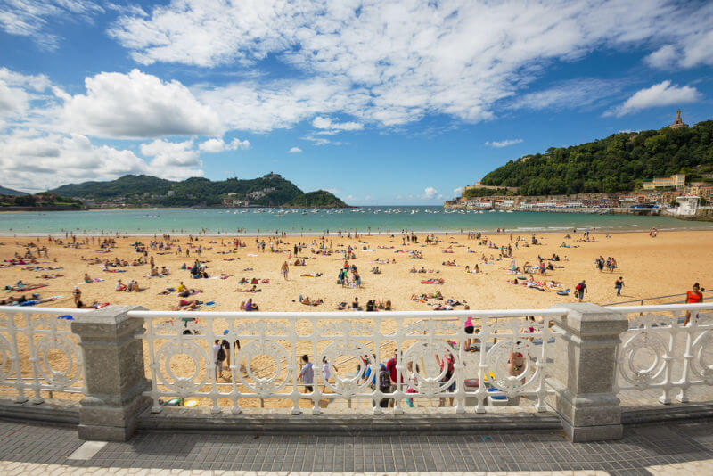 Декоративний білий металевий паркан прикрашає цей тротуар на пляжі.
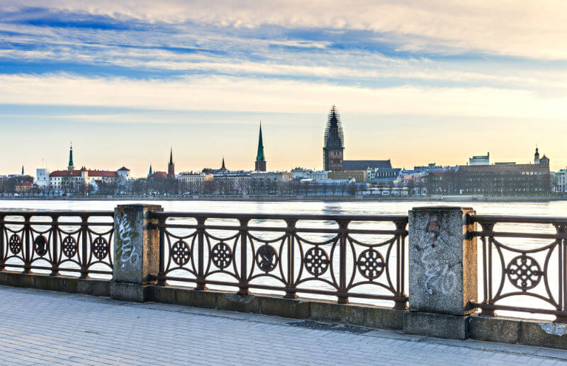 Чорну металеву огорожу із зірковим дизайном виходить на річку.
Садова решітка - паркан, допомагає тримати і влаштувати квіти і кущі.
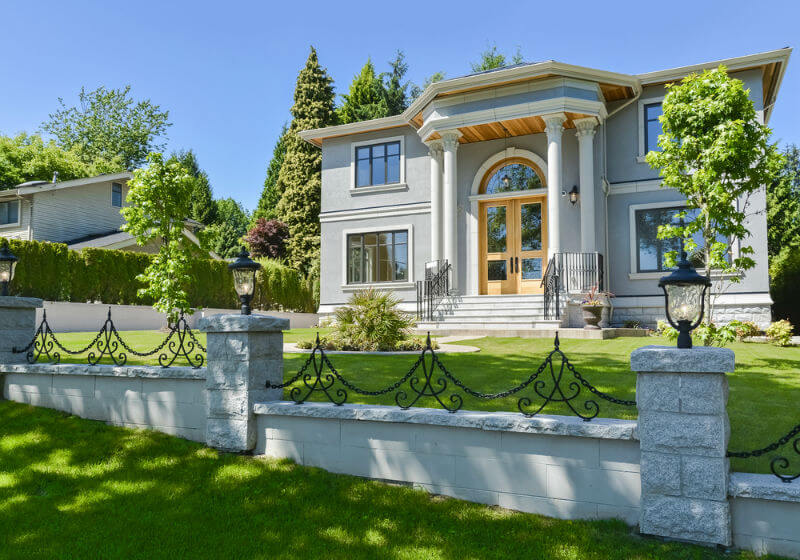 Цей сліпуче високо профільний сірий будинок з великими вікнами. Творчий паркан спереді надає двору елегантний
стиль.
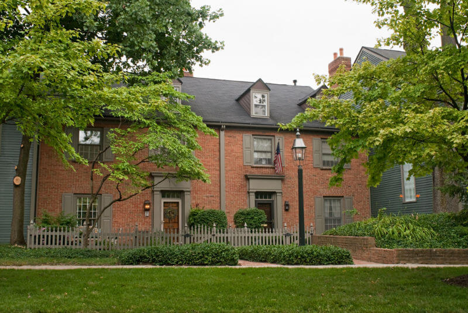 Вище вказаний цегляний будинок прикрашений коричневим штахетником.
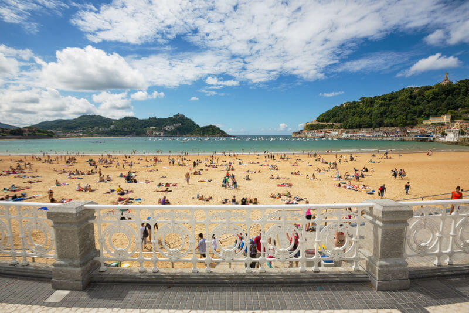 Декоративний білий металевий паркан прикрашає цей тротуар на пляжі.
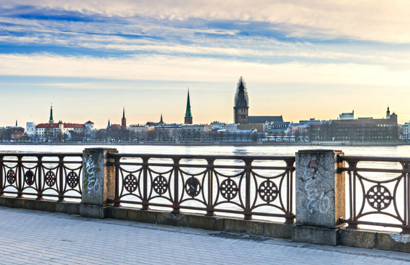 Чорну металеву огорожу із зірковим дизайном виходить на річку.
Перше що потрібно знати, це де розташувати Ваш новий паркан? Чи ви огорожуєте свій двір, щоб позначити межу Вашої власності чи просто, щоб додати йому естетичної цінності? Чи мова йде про фасад чи про задній двір. Огорожа перед двором повинна мати гарний вигляд з вулиці і бути прикрасою його околиць. Це може бути паркан для огорожувати домашніх тварин або дітей і захищати від вуличного руху. Розуміння основної цілі вашої огорожі допоможе визначити який тип паркана Вам найбільше підходить. 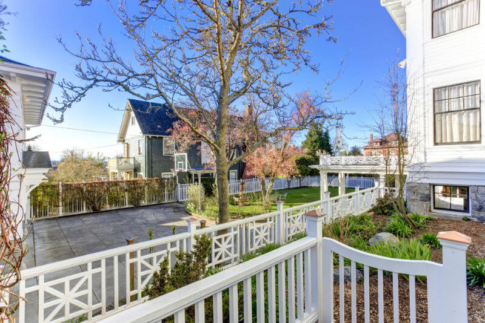 Коли справа доходить до огородження ззаду будинку - існує багато причин для його встановлення. Встановлення огорожі покращує естетичну привабливість території. Хоча вона може служити й іншим цілям. Огорожі заднього двору, наприклад, можуть допомогти зберегти Ваш ландшафт закритим і під контролем. Це також відділяє Ваш задній двір від сусідів, зберігаючи речі аккуратно відокремленими. Він також виконує ті самі функції що і на переді, як безпека і захист дітей і домашнії тварин. Огорожі створюють гарні межі, які не тільки утримають речі всередині, а й ззовні. Це може бути засіб для відлякування грабіжників, яким незначним він би не був, а також допомагає утримати більшість диких тварин від вашої домівки. В деяких парканів є колючий дріт, щоб не дати людям і тваринам зайти на Вашу територію. Деякі паркани оснащені електрикою підключеною до них, щоб вдарити зарядом будь-кого хто торкнеться його. Ці типи огорож дійсно хороші для безпеки. Багато домовласників полюбляють з друзями поїсти на столику для пікніка або на ганку. Паркан забезпечить Вам спокій, щоб чужі люди не заходили до Вас під час відпочинку. Він надасть Вам необхідну конфіденційність, а також відчуття безпеки. 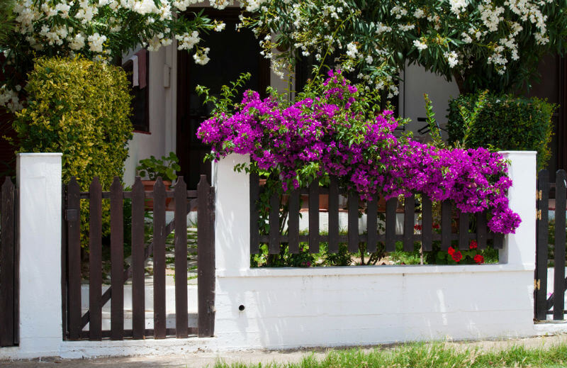 Коли Ви оприділились з метою та причиною, для чого Вам потрібний паркан, Ваше наступнє рішення буде визначитись з його висотою. Для паркана, який просто добавляє естетичної привабливості Вашому будинку, Вам ймовірно потрібний тільки паркан висотою в декілька футів. Однак, якщо ви хочете усамітнитись, тоді Ви можете встановити паркан висотою 5 - 7 футів. Перш ніж ви вирішуєте вибір висоти вашого паркану, майте на увазі, що у деяких містах висота кришки огорожі становить близько 6 футів, але у вашого міста можуть бути різні вимоги. Фактично, місто може вимагати, щоб огородження в районі мали певний колір і матеріал. Тому розберіться з цим до того як Ваш підрядник буде закуповувати матеріали для огорожі. Паркан, призначення якого в основному косметичне, не повинен бути зроблений з чого-небудь, що є особливо міцним. Однак, якщо конфіденційність і безпека є головними цілями, то ви хочете щось міцне, яке буде на довгі роки. Нижче наведені деякі з найбільш поширених матеріалів, що використовуються та їх переваги:
Типи огорож по матеріалах
Дерево
Ви можете морити або фарбувати дерево в відповідності с навколишнім стилем. Деревяний паркан може існувати від 15 до 20 років. Деревяні огорожі можуть служити як паркан для приватного життя, так і декоративним цілям. Існує багато видів деревини, з яких можна виготовляти огорожі з ялини, сосни, червоного дерева і кедру. Деякі з них навіть зроблені з композитної деревини (з перероблених матеріалів) і повинні бути проморені до кінця, щоб протистояти стихіям. Дерев'яні паркани вимагають регулярного обслуговування та іноді підфарбовування, щоб збільшити їх довговічність. Коли справа доходить до безпеки, дерев'яний паркан не найкращий вибір, тому що його можна легко зламати, щоб увійти у ваш двір. 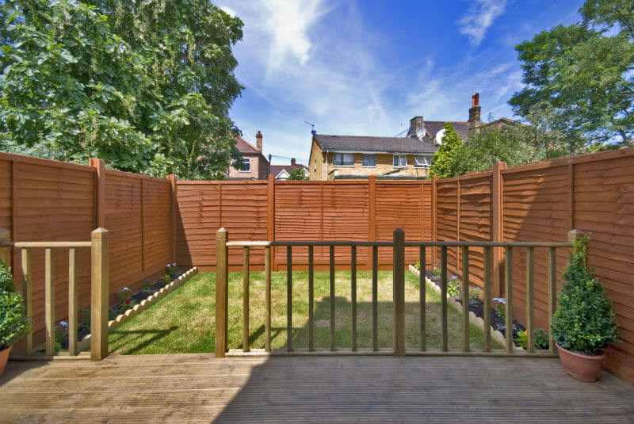 Цей невеликий задній двір закритий горизонтальним дерев'яним парканом. З патіо, є достатньо місця для приємного барбекю. 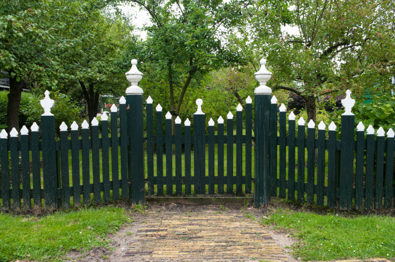 Ось хороший низький паркан, який пофарбований в чорне з білими кінчиками зверху. 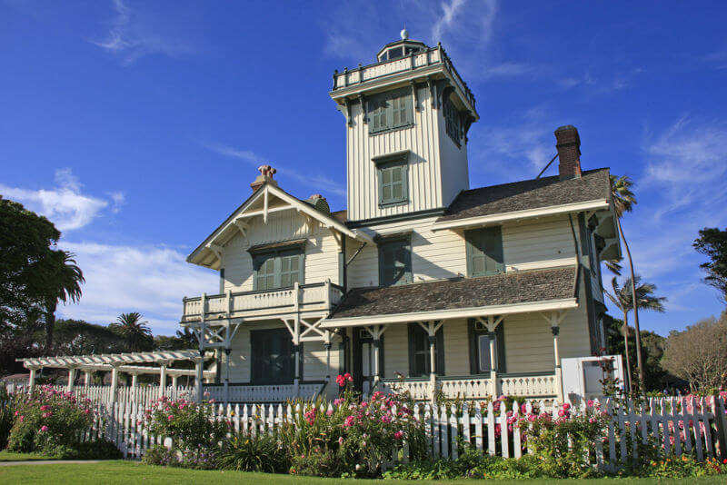 Це приклад будинку на морі з білим парканом.
Вініл
Цей варіант призначений для тих, хто хоче мати хорошу естетику і довговічність. Вініл триває довго і може бути встановлений як штахетник або паркан з дощок. Кольори дещо обмежені, оскільки він доступний тільки в нейтральних відтінках. Цей матеріал не можна морити або фарбувати, як дерево. Вініл вологостійкий, але може розвиватися цвіль при впливі вологих умов протягом тривалого періоду часу. Це означає, що будь-які спринклери (оприскувачі) у дворі повинні зберігатися досить далеко, щоб не потрапити в вінілову огорожу. 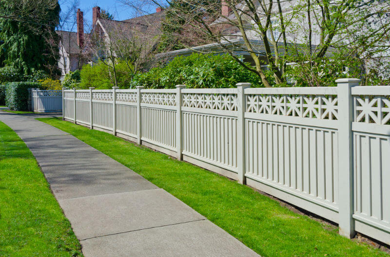 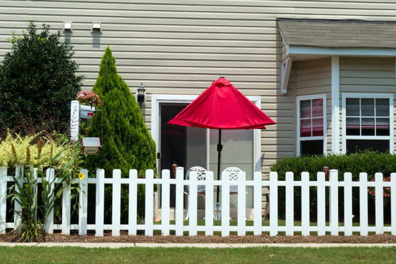Метал
Багато парканів зроблено з металу. Він міцний, універсальний і поставляється в багатьох стилях. Його можна використовувати для прикраси, конфіденційності та безпеки. Нижче наведені найбільш поширені види металу, які використовуються для огорожі.Алюміній
Що стосується металевих варіантів огорожі, їх багато. Тип, який ви обираєте для установки, буде залежати від того, скільки вам потрібно безпеки та конфіденційності. Паркани з алюмінію дуже міцні, довговічні і забезпечують відмінний захист. Вони дуже ефективні для оберігання дітей і домашніх тварин від небажаних територій. Вони можуть поставлятися в двох і 3-рейковому типах, які надзвичайно міцні. За ними потрібно дуже мало догляду. Все, що їм потрібно, це час від часу їх мити.Сталь
Сталевий паркан - це ще більш сильний паркан, ніж алюмінієвий, і він відмінно підходить для безпеки. Рейки сталевого загородження витримують в 4 рази більше ударів, ніж алюмінієві. Вони також краще захищають від ерозії, викликаної кліматом. Вони практично не вимагають догляду 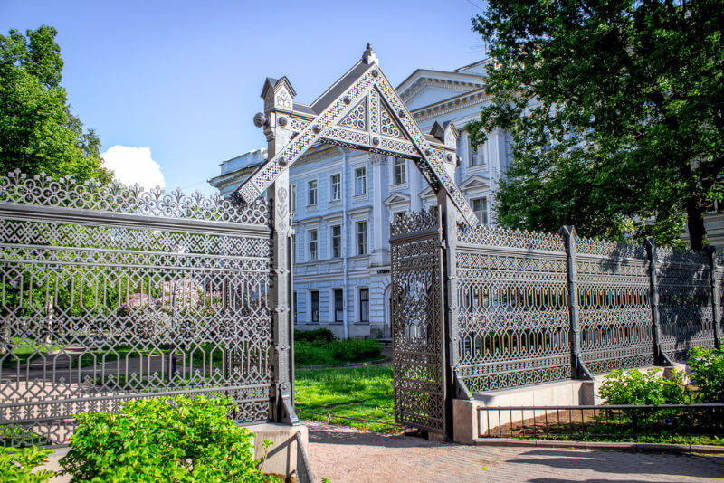 Крутий паркан і ворота формують вид на вражаючу будівля. Паркан створений із сталі з дуже деталізованим дизайном кіл, трикутників і інших форм.Коване залізо
Цей тип огорожі також відмінний з міркувань безпеки. Він міцний і може прослужити вам до 50 років і більше, якщо ви його, доглядаєте належним чином. Щоб отримати максимальний захист від такого паркану, рекомендується встановити його з висотою не менше 6 футів. Ті, які 4 фути заввишки, вважаються середнім рівнем безпеки. Видний цегляний будинок знаходиться на огороженій території. Цегляна колона металевого паркану виглядає так само,
як і будинок. Трава добре зберігається, як і дерева, і кущі.
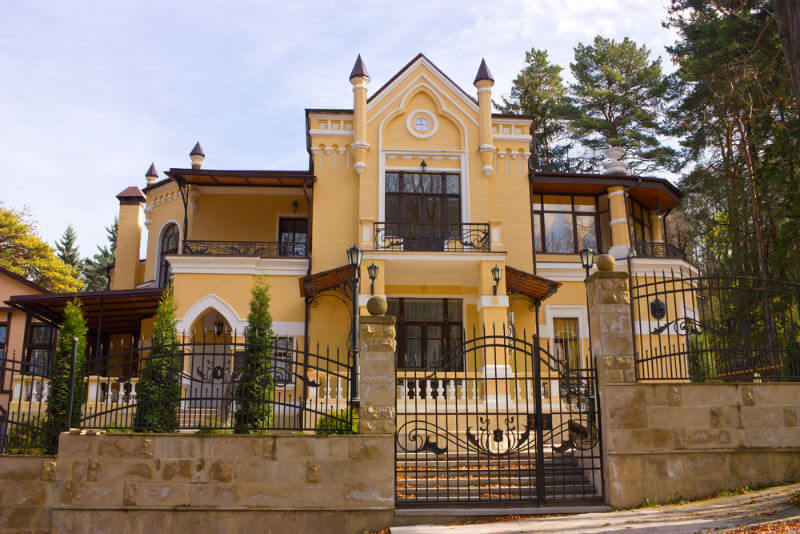 Старий величний двоповерховий будинок спроектований в іспанському стилі. Тема жовтого і білого кольору добре
підходить для цього місця. Дизайн воріт огорожі майстерно зроблений з квітковим візерунком. Огорожа являє собою
комбінацію каменю і металу.
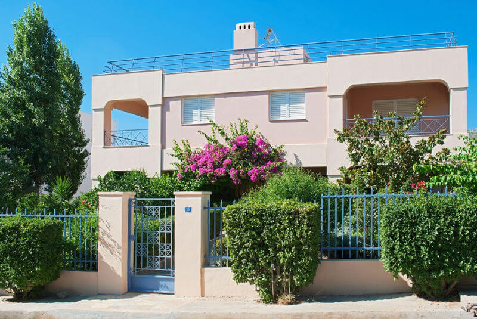 Це рожевий двоповерховий сучасний будинок. Зовнішня сторона захищена металевим парканом з синього металу. Дерева
і кущі за огорожею використовуються для усамітнення від сторонніх очей.
На цьому господарстві передній паркан має темно-синій зелений колір і зроблений з міцного металу. Це декоративний
короткий паркан, але високі кущі служать природний приватний паркан.
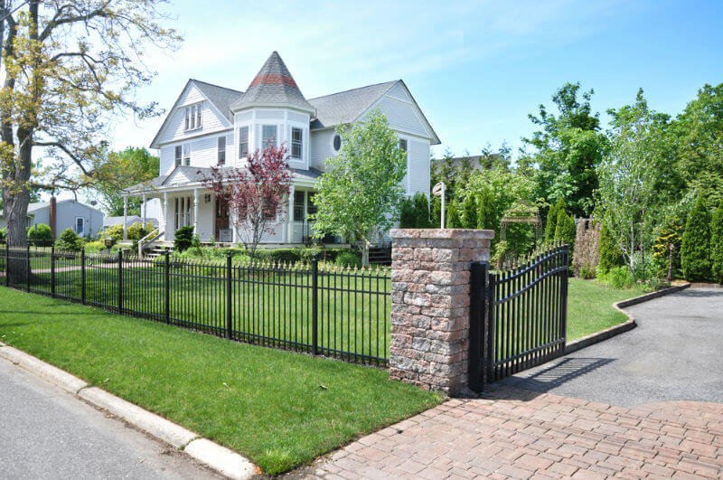 Паркан з кованого заліза, зображений вище, покриває весь двір. Верхня частина паркану має золоті шипи для елегантного
зовнішнього вигляду, а також для захисту від злому. Ворота утримуються разом великий цегляної колоною
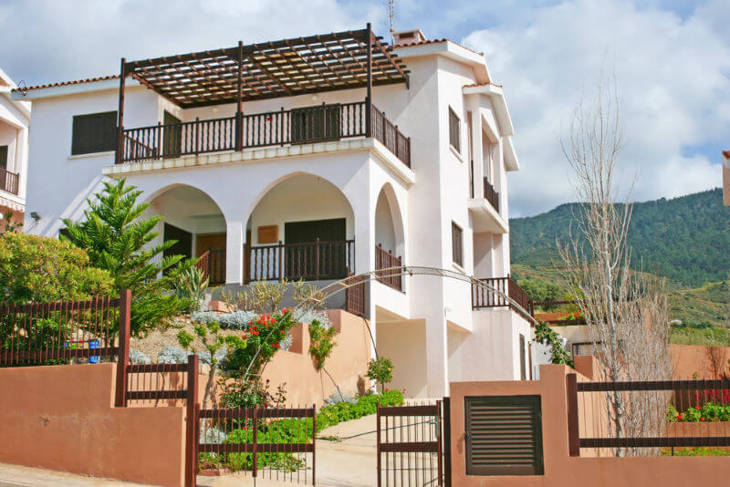 Цей триповерховий будинок - справжня перлина. Майно має два великих балкони, з яких відкривається вид на гори.
Коричневий заміський паркан містить будинок і невеликий сад.
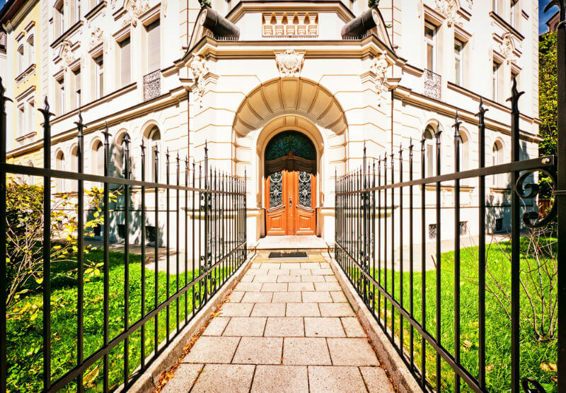 Декоративний металевий паркан чорного кольору обрамляє кожну бік вузької цементною доріжкою. Він веде до входу
у цей величний європейського стилю триповерхову будівлю.
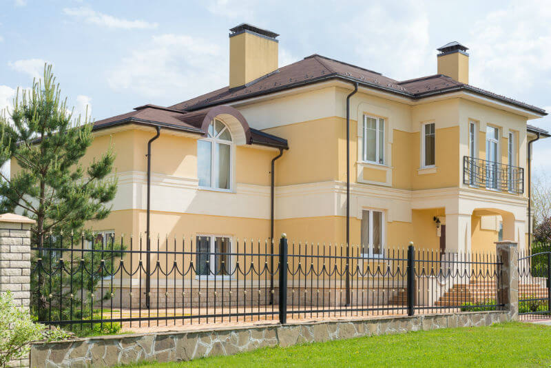 Гарний металевий паркан будинку межує з цим чудовим двоповерховим кремово-жовим житлом. Передні ворота ведуть
до декількох сходинок і головного входу.
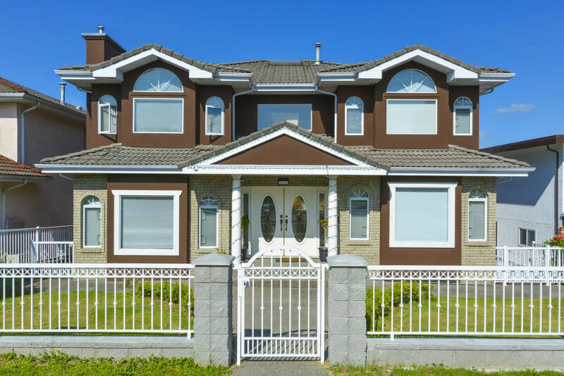 Ландшафтний паркан дає відвідувачам візуальне захоплення перед тим, як наблизитися до входу в будинок. Паркан
короткий. Це в основному для того, щоб добре виглядати, що він і робить з характерними візерунками. Сам будинок
великий з коричнево-білою кольоровою гамою.
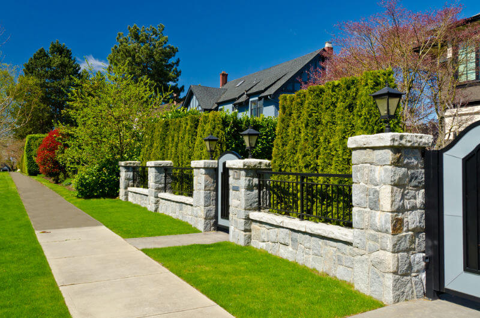 Ось прекрасний будинок у передмісті. Паркан і ворота являють собою простий металевий дизайн. Колони і фундамент
- це нестандартний камінь. Високі дерева висаджуються за парканом, щоб збільшити приватність.
Цегла
Цегляний паркан є одним з найдорожчих варіантів паркану. Тим не менш, він також є одним з найбільш безпечних варіантів приватності для двору. Цегла фактично не вимагає догляду і дає вам кращий захист відповідно до висоти. Це також відмінний звуковий бар'єр, що робить його ліпшим для барбекю та вечірок в басейні на задньому дворі. Проте, щоб мати цегляну стіну навколо двору, потрібен міцний фундамент. Якщо земля під ним розмивається, тоді весь паркан може завалитися. Нижче наведено кілька ідей для парканів. 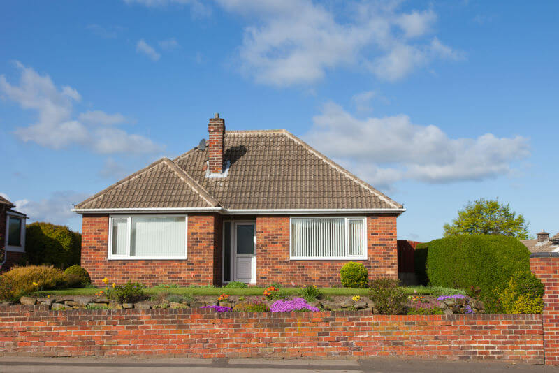 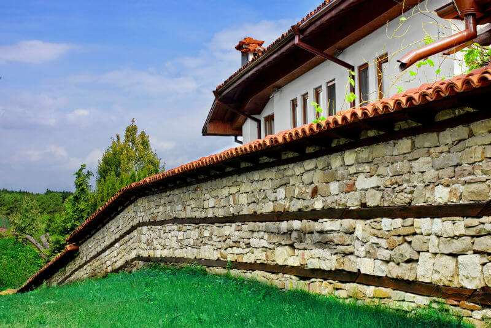Скло
Скляні паркани зазвичай використовуються навколо басейнів в якості огорожі. Він нього мало толку для безпеки або конфіденційності, так як цей матеріал прозорий і через нього легко перелізти. Використання скла для огорожі додає сучасний стильний стиль у ваш інтер'єр. Скло вимагає багато догляду, чищення, так як воно легко забруднюється порохами. Саме по собі скло може служити довгий час. Однак, воно не дуже міцне, якщо по ньому вдарити тупим предметом. 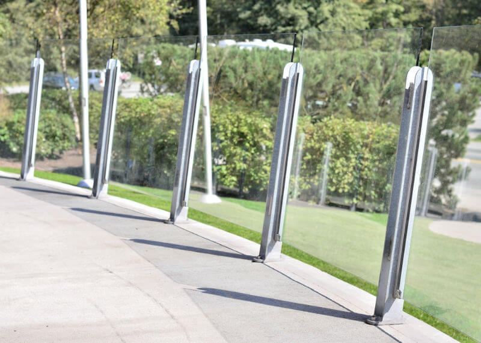 Безмежний скляний паркан створює видимість більш відкритого простору. Відвідувачі можуть побачити акуратно доглянуту траву з тротуару.  Це критий басейн. Сучасне скляне огородження дозволяє людям насолоджуватися приголомшливим видом на океан з верху.Бамбук
Бамбук насправді тип трави. Ці паркани в основному використовуються декоративно. Це стійкий ресурсний матеріал, так як бамбук росте досить швидко. Бамбук додає свого роду елемент азіатського стилю до Вашого саду. Ще одна перевага бамбуку - його довговічність, міцність і мала потреба в догляді.   Основний паркан з бамбука направляє відвідувачів кам'яними сходами до парку.  Фото люб'язно надано Wonderlane : Малий сад з різними рослинами, квітковими і бамбуковими огороджувальними панелями.Дивіться тут ще більше прикладів бамбукових парканів
Останнє міркування при виборі паркану - правильний вибір. Знову ж таки, необхідно встановити пріоритети. Що найважливіше? Це безпека, конфіденційність або зовнішній вигляд?
Типи паркану за призначенням
Конфіденційність та безпека
Огорожа для захисту приватності, як правило, високі, охоплюють шість футів або й більше і не мають отворів, є проміжками в них. Його мета - не допустити, щоб люди побачили те що за огорожею. Між тим охоронні огорожі служать перешкодою для проникнення порушників. Знову ж таки, це більш високі паркани, які складно збільшувати. Більшість часу така огорожа служить для безпечного приватного життя. Вона може бути виготовлена з різних матеріалів. Звичайно включають метал, дерево, цеглу і вініл.Ось два приклади, які забезпечують конфіденційність та безпеку.  З цим парканом нетреба турбуватись про людей, які заглядають у вашу чудову изольовану кухню. Високий дерев'яний паркан, без проміжків між ними, не дозволяє людям зовні заглядати всередину.  Сильний і високий паркан забезпечує безпеку і конфіденційність, необхідні жителям. Більше приватних парканів тут
Декоративні
Декоративні паркани використовуються для дизайну та декору огорожі. Вони, як правило, короткі і доповнюють стилістику околиць. Популярно використовувати їх навколо садів, подвір'я і на відкритому повітрі.  Ідеї декоративного забору бувають різних форм. В даному випадку - це короткий білий паркан, що веде до будинку. Він має квадратну і прямокутну конструкцію.  Ось проста ідея паркану,як варіант. Це дерев'яний паркан з довгими і короткими стовпчиками, що чергуються.  Металевий червоний паркан в азіатському стилі підкреслює ставок в японському саду Садова решітка - паркан, допомагає тримати і влаштувати квіти і кущі.
 Цей сліпуче високо профільний сірий будинок з великими вікнами. Творчий паркан спереді надає двору елегантний
стиль.
 Вище вказаний цегляний будинок прикрашений коричневим штахетником.
 Декоративний білий металевий паркан прикрашає цей тротуар на пляжі.
 Чорну металеву огорожу із зірковим дизайном виходить на річку.
Сад
 Білий сад паркан оточує акуратне ложе з троянд.  Іноді простота краще. Цей невеликий садовий паркан - метал з петлями. Він межує з газоном і квітами.  Кована огорожа саду захищає маленькі квіти біля дверей.  Свіжі органічні продукти завжди кращі. Паркан овочевого саду являє собою прекрасне повернення назад в цей веганський рай.  Недорога огорожа часто є тим, що потрібно щоб зробити роботу. В той час як це ніколи не буде найдовшим парканом, в одночас він додає дуже необхідний декор в сад.  Ось крихітний бамбуковий, короткий паркан для саду. Це лише для краси, і воно відмінно працює.  Тут у нас є ще один залізний паркан саду, що оточує маленький рожевий кущ.Басейн
Цей неймовірний басейн викладений світло-блакитною плиткою і оснащений джакузі. Сучасний дизайн паркану об'єднує метал і скло. Підлога біля басейну викладена сланцем.  Це задній двір двоповерхового будинку. Половина це трава. Інша половина має помаранчеві плиткові підлоги і прямокутний басейн. Безрамковий паркан з скляного басейну охоплює басейн, створюючи ілюзію безмежного периметра.Стилі огорож
Решітка
Lattice fences have diagonal designs with about 2 inches of spacing between panels made of wood, PVC, or vinyl. These can give you a small bit of privacy but there are still small holes that allow for light and probing eyes up close. Many people use this kind of fencing around their gardens and for growing ivy walls. There is also a variation of this type of fence where only the top is lattice. This way, it can serve as a privacy and decorative fence.  Chain Link
The chain link design is made from coated steel wires or galvanized steel wires that form a zigzag diamond pattern. These fences work good at keeping pets and children in but not so good at security or privacy unless a fence screen is added to block the holes. Privacy fence screens can also be used to block wind and dust.  Picket
Picket fences are traditional decorative fences that are very commonly placed in the front yard. They are usually around three feet high, attractive, and have evenly spaced boards that sit vertically. They can be made from vinyl, sheet metal, or wood. They are attached to rails. These fences are mainly for aesthetics. Don’t count on them for any kind of security or privacy. Below are several kinds of picket fences.White
 The photo above shows a cottage style home on the corner of the street. A traditional white picket fence framing the home is one of the most desired fencing ideas. It has a sea green colored roof and window panel shutters and a small garden full of pink rose bushes.  The image above shows an off white spaced picket fence design. The materials used is a mix of stone columns and vinyl for the fence itself. The top of the fencing is pointed and the gate has a nice curvy style.  Here is a simple home with outdoor fencing. It is gray colored with square panels that are equally spaced. The fence matches the color of the home as well. Overall, the home and lawn is well maintained.  The above pic is an example of a garden fence. This one is a two part one. The bottom is charcoal grey and the top is white. Both parts are made from wood. There is an arbor in front of the picket gate.  The white iron fence has a special sloping design. It is more ornamental than for security. The upper part is pointed making it difficult to jump over without injury. However, it is not something that is insurmountable. Here’s a simple backyard fence idea. It is a white wooden picket fence with a flat top. The wood boards alternate between large and small. This looks great on the green lawn. The entryway fence leads to a brick pathway to the house. This fence is white and made from metal. It is a mid-length in height and with alternating long and short bars in between. Here sits a beautiful two story home with an ascending wooden fence over a brick foundation. The fencing color matches that of the window sill and door frame. This is one of the classic front yard fence ideas around. The large mid-western home has black window accents and a enormous front yard. It is enclosed by a white under and over fence.Scallop
The nice suburban home has a picket fence type that has a wavy shape at the top. It is also known as a over-scallop fence. It’s of the wood fence styles that can add a touch of panache to your home.Spaced
Another variation on the picket fence. This one serves no other purpose than looking good in the front yard. The white color creates a nice contrast with the bright red and dark green colors.Other
Split Rail
People see a lot of these fences being used on ranches or farms. They are usually made from long fence boards or timber logs and then split into rails. This type of fence is used for its decorative value, keeping animals in, and marking property lines. The number of split rails varies as well.Two Rail
Here’s an example of a two rail fence. It’s a basically for cosmetic purposes only. However, it does look quite nice since the fence matches the color of the roof to a tee. Pictured above is a traditional horizontal fence design. It’s made from vinyl and has two rails. They match perfectly with the window sill.Three Rail
This beautiful landscape shows how peaceful life can be. It’s nothing but bright green grass for miles. The wooden farm fencing is simple and inexpensive. Three rail farm fencing keeps the horses at bay on this ranch. Nothing special here. Just a plain fence that gets the job done.Four Rail
Large acreage of green lush grass surrounds this terrific looking home. The ranch fencing consists of four rails. I’m sure there are some happy horses on this property.Hewn Log & Branch
Here’s one of the easier and cheap fence ideas. Just buy some logs, stack them together, and nail down every two logs. It looks good too. Here’s an attractive lush garden. It has stone paved steps with an abundance of flowers on each side. A rustic branch fence adds to its charm. The image above shows a farm with a road leading to a farm house. A branch fence borders the horses and allows them to graze peacefully. Being out in nature is a great place to relax and take time to reflect on life. This majestic log cabin is homely and grand. There’s a walkway and a safety fence that is made from log as well. This green forest has many tall redwood trees. The hewn log fence creates an unobstructed path for hikers to enjoy nature. This horizontal fencing lets visitors get as close as possible to the lake and the scenic view of the vast forest and mountains. A shallow pond is framed by a decorative wood fence. The background is full of trees, bushes, and other plant life. This picture is so captivating that it could be on a postcard. The long grassy roads leads to a small town near the mountains. The cedar fence follows the path along the way. A four rail horizontal horse fence surrounds this animal on an Autumn day.Дріт
Огорожа, зроблена за допомогою дроту, використовується для утримання людей або тварин в певному просторі або поза ним. Деревина зазвичай використовується як стовп з проводкою між ними. Це одна з багатьох дешевих ідей огорожі для ферм і відкритих майданчиків. Цей тип огорожі зазвичай складає від трьох до чотирьох футів у висоту. Хоча це є стримуючий засіб, воно не є сильним. The farm has long stretches of land marked by this wood and wire fence design. Here’s an example of a simple wire fencing. Branch wood is used as posts and wire netting as the fence. Walking trails are commonly lined with wire fences to prevent hikers from wondering onto dangerous unpaved areas.Плетені кошики
Сніг покриває парк в холодний день. Це тип декоративного паркану, який часто не видно. Сітка з плетеного кошика використовує металеві перила і стійки щоб тримати дерев'яне плетиво.